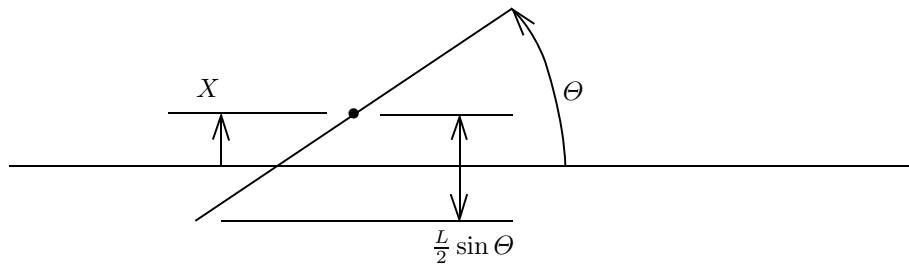
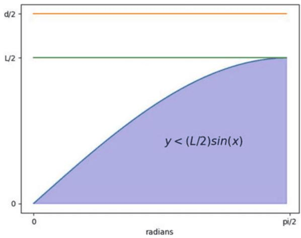
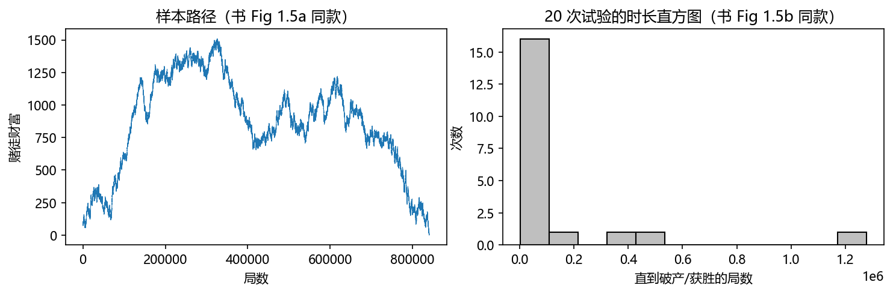
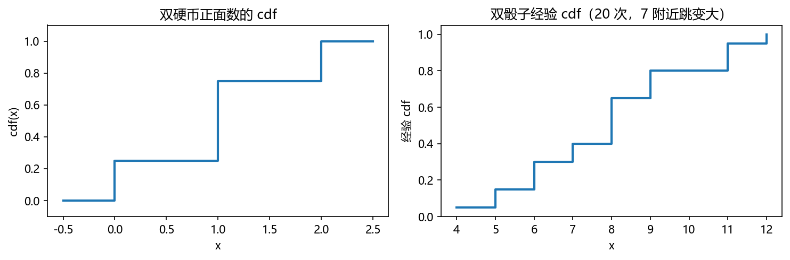
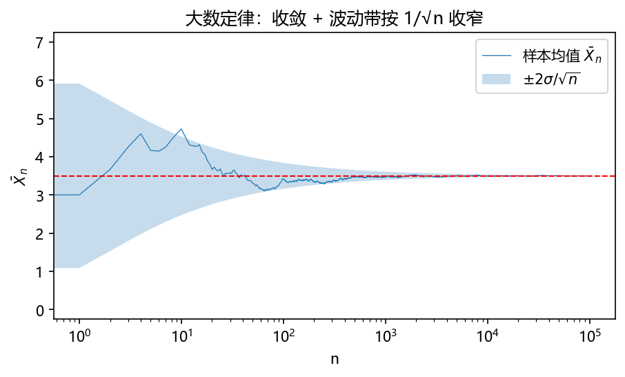
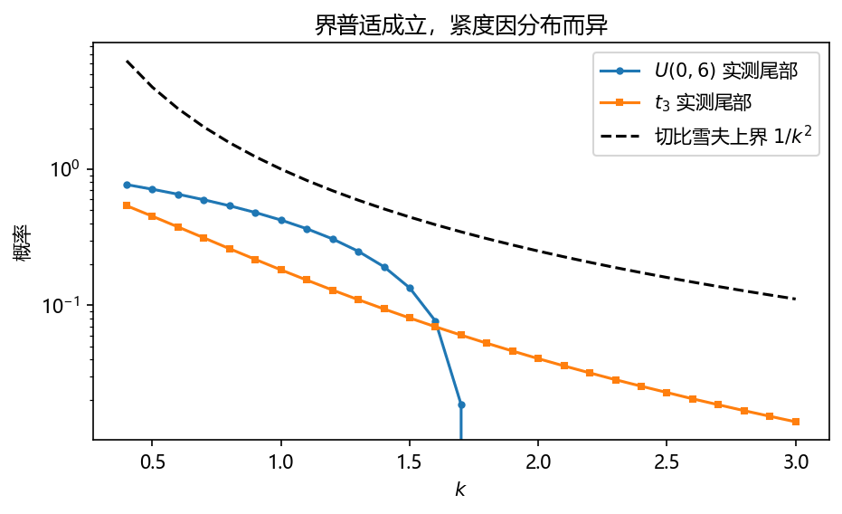
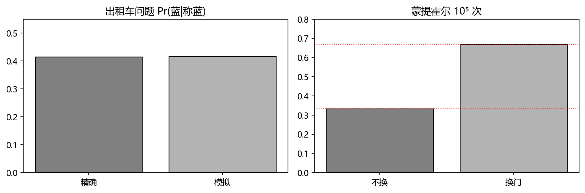
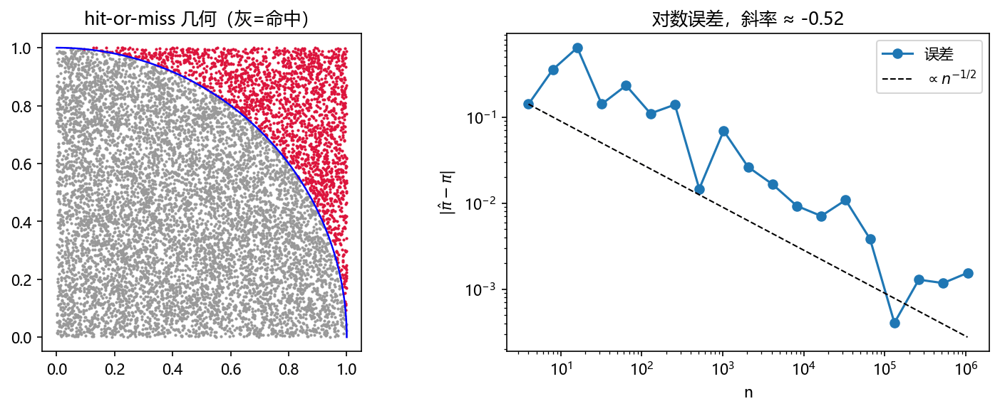
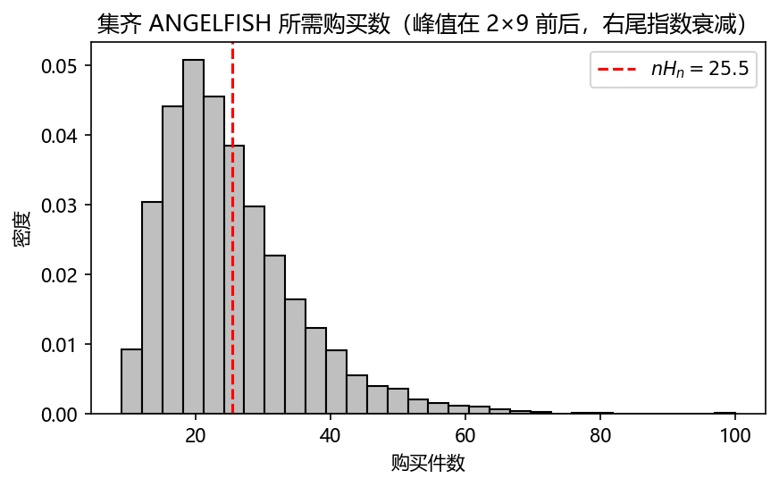
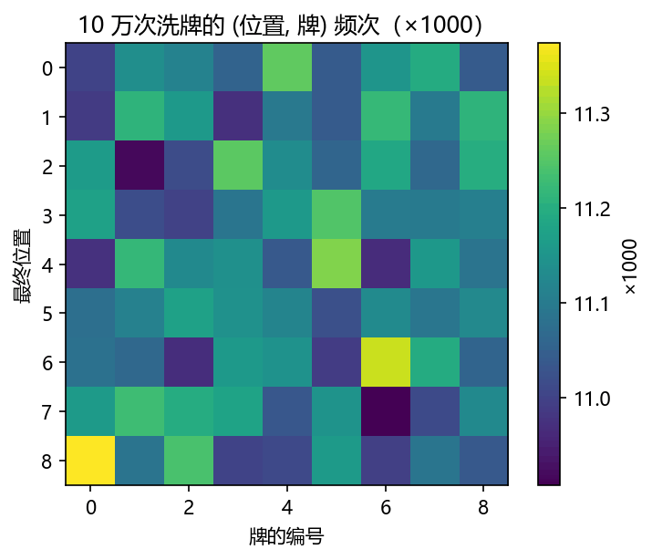

第 1 章 导论：随机数如何解决问题#
本章解决：蒙特卡罗方法（Monte Carlo method）是什么、从哪来、凭什么能用"扔随机数"算出确定的答案。一条主线贯穿全章：把答案写成某个随机试验的平均值，再用样本均值把它估出来。本章同时把全书的地基打完——§1.2 用整节篇幅过一遍概率论（随机变量、期望、方差、大数定律、切比雪夫、贝叶斯、联合分布），§1.3 讲随机数从哪来，§1.4 三个经典应用收尾。 对照教材：Shonkwiler & Mendivil《Explorations in Monte Carlo Methods》第 1 章（pp.1–46，§1.1–1.4，公式编号 (1.1)–(1.38) 与笔记一致）。补充：Dunn & Shultis《Exploring Monte Carlo Methods》§1.1–1.6（历史、求积视角与模拟视角之分）。
| 关键词 | 事实 |
|---|---|
| 方法本质 | 用样本均值 \(\bar r=\frac1N\sum r(X_i)\) 估计期望 \(\mathbb E(r(X))\)（式 (1.12)） |
| 两大支柱 | 大数定律（保证收敛）+ 中心极限定理（给出误差，第 2 章 §2.6） |
| 收敛速度 | 误差 \(O(N^{-1/2})\)——蒲丰投针十万次才准 1 位，但与维数无关 |
| 两个前提 | 好用的（伪）随机数（§1.3）、从分布抽样的方法（第 2 章） |
| 命名 | Ulam 与 von Neumann，1940s 洛斯阿拉莫斯中子扩散问题 |
本章代码：nb/ch01.ipynb（NumPy 实跑，随机种子 2024，全部数字可复现）。12 个实验对应本章 12 个知识点：蒲丰投针与误差衰减、直方图 super-experiment、赌徒样本路径、骰子直方图、经验 cdf、大数定律、切比雪夫验证、贝叶斯（出租车 + 蒙提霍尔）、LCRNG 网格结构、hit-or-miss、优惠券收集、Fisher–Yates 洗牌。
实验索引
| # | 实验 | 书节 | 产出图 |
|---|---|---|---|
| 1 | 蒲丰投针与误差衰减 | §1.1.1 | out-1-1.png |
| 2 | super-experiment 直方图 | §1.1.2 | out-1-2.png |
| 3 | 赌徒样本路径 | §1.1.3 | out-1-3.png |
| 4 | 双骰子直方图 | §1.1.2 | out-1-4.png |
| 5 | 经验 cdf | §1.2.2 | out-1-5.png |
| 6 | 大数定律 | §1.2.4 | out-1-6.png |
| 7 | 切比雪夫不等式实测 | §1.2.4 | out-1-7.png |
| 8 | 贝叶斯：出租车 + 蒙提霍尔 | §1.2.6 | out-1-8.png |
| 9 | LCRNG 网格结构 | §1.3.3 | out-1-9.png |
| 10 | hit-or-miss 估 π | §1.4 | out-1-10.png |
| 11 | 优惠券收集 | §1.4 | out-1-11.png |
| 12 | Fisher–Yates 洗牌 | §1.4 | out-1-12.png |
1.0 本章导图#
1.1 随机数如何解决问题？（How Can Random Numbers Solve Problems?）#
蒙特卡罗方法：借助以不可或缺的方式生成随机数的计算机算法来分析现象的技术（原书定义）。它被 Ulam 与 von Neumann 命名，用来在 1940 年代初的洛斯阿拉莫斯求解中子扩散问题。今天它活跃在数学、科学、工业、商业、娱乐各处——预测随机过程（微观粒子运动、网络数据包、港口船只到离港）、数据传输与安全（跳频通信、加密）、以及一切需要"意外感"的游戏。
1.1.1 蒙特卡罗方法简史与蒲丰投针（History; Buffon Needle Problem）#
蒲丰投针问题（1733）：法国博物学家 Comte de Buffon 想出用随机实验估计 \(\pi=3.1415926\dots\) 的办法——往一块划满平行线的地板上扔针。设针长 \(L\)，平行线间距 \(d\)，\(H_n\) 记 \(n\) 次投掷中"命中"（针触碰或跨越离针中心最近的那条线）的次数。
建模只需两个随机量（书 Fig 1.1）：
- \(X\)：针中心到最近一条线的距离，\(0\le X\le d/2\)；
- \(\Theta\)：针与平行线的锐角夹角，\(0\le\Theta\le\pi/2\)。
投掷"均匀随机"意味着点 \((X,\Theta)\) 均匀落在矩形 \([0,d/2]\times[0,\pi/2]\) 里。针命中一条线当且仅当

当 \(d\ge L\) 时，命中概率就是"曲线下面积 ÷ 矩形面积"：
取 \(d=2L\)，则命中概率恰为 \(1/\pi\)——没人想过 \(\pi\) 能由随机实验测定，这就是蒲丰解答的惊人之处。
反解出 \(\pi\)：记 \(n\) 次投掷、\(H_n\) 次命中，则 \(\pi\approx n/H_n\)。坏消息（书 §1.4 会给出原因）：精度只按 \(1/\sqrt n\) 改善，十几次投掷毫无用处，"适度的精度"需要海量试验。好消息：数字计算机能极快地模拟海量试验——这正是蒙特卡罗方法诞生的历史逻辑。1943 年洛斯阿拉莫斯的科学家们同样不能做真实的中子实验，只能模拟；von Neumann 顺手发明了第一个伪随机数发生器"中间平方法"（§1.3.2）。
书取 \(d=2,\ L=1\)，模拟程序只需生成 \(X\sim U(0,d/2)\) 与 \(\Theta\sim U(0,\pi/2)\)，命中判定 \(X\le\frac L2\sin\Theta\)。还有一个漂亮的变体（书 Alg 1.2 Buffon Ab Initio）：模拟本身需要 \(\pi\) 来生成 \(\Theta\)，那就先随便假设一个 \(\pi_0\)，把每次模拟估出的 \(\pi\) 塞回去当下一轮的 \(\pi\)——迭代收敛，这是**不动点迭代（fixed-point iteration）**的一个活例子。

拓展：为什么用 \((X,\Theta)\) 二维矩形就够了
针的位形其实由三个量决定：中心坐标 \((x_0,y_0)\) 和角度 \(\theta\)。但由平移对称性，只有中心到最近线的距离 \(X\in[0,d/2]\) 有意义；角度取锐角 \(\Theta\in[0,\pi/2]\) 是由针两端对称性。位形空间从 \(\mathbb R\times[0,\pi)\) 坍缩成一个矩形，且均匀分布保持不变——"用对称性砍维"是模拟建模的第一课。若 \(d<L\)（长针），一根针可跨多条线，命中概率不再直接是 \(2L/(\pi d)\)，见书 Problem 28 前后讨论。
1.1.2 直方图：模拟结果的分析工具（Histogramming Simulation Results）#
跑一次蒲丰模拟只得到一个数。它偏高？偏低？多接近真值？不知道——除非多次实验并做直方图（histogram）。
直方图的机制：把值域用分点 \(x_0,x_1,\dots,x_K\) 切成小区间（bins），数每个 bin 落了多少个值。三种口径（书原文口径）：
| 名称 | 纵轴 | 特点 |
|---|---|---|
| 频率直方图（frequency histogram） | 计数 \(f_i\) | 原始计数 |
| 相对频率（relative frequencies） | \(f_i/n\) | 面积不必为 1 |
| 密度直方图（density histogram） | \(c\cdot f_i\)，\(c\) 使总面积为 1 | 逼近概率分布，本节之后说"直方图"默认指它 |
等宽 bins（宽 \(\Delta x\)，总数 \(N=\sum f_i\)）时归一化常数：
Super-experiment（书 Alg 1.3 的设计）：单次实验取 100 次投掷估 \(1/\pi\)（用 \(1/\pi=0.318309\dots\) 而非 \(\pi\) 本身，因为想让随机变量在分子而非分母——见"坑与陷阱"第 1 条）；把该实验重复 2000 次，对 2000 个估计值做密度直方图。 altogether 二十万次模拟投掷。结果（书 Fig 1.3）呈钟形（正态分布，§2.6 理论化）：均值 \(\bar p=0.3180\)，标准差 \(s=0.0467\)。
正态分布有性质：样本落在均值两侧 2 个标准差内的概率是 0.954。单次实验的估计通常落在 \(0.3180\pm 2\times 0.0467\)；而 2000 个样本的平均，其波动缩到 \(2\times 0.0467/\sqrt{2000}=0.0021\)。于是可以写下概率陈述：
取倒数（不等式反向）得 \(\Pr(1/0.3201<\pi<1/0.3159)=0.954\)，即 \(3.124<\pi<3.165\)。这就是"给蒙特卡罗结果挂误差棒"的原始形态，§2.6.3 会把它做成通用流程。
骰子实验（书 Fig 1.4）演示样本量的作用：1000 次双骰子求和的直方图与理论概率（三角形分布）相去甚远，10000 次就贴近了。连续型观测量（如鸡蛋周长）没有天然的 bin，需人为分箱——离散骰子实验其实也是分箱，只是 bin 被结果的离散性天然安排好了。
1.1.3 样本路径（Sample Paths）#
第二种呈现方式：把第 \(i\) 次试验的结果 \(R_i\) 画成 \((i, R_i)\) 折线，即样本路径（sample path）——看过程随时间怎么走，而不只看终点的分布。
书例（Alg 1.4 Gambler's Fortune）：赌徒本金 $100 对庄家 $2100，每局 $1、胜率 50%，任一方破产即停。样本路径显示财富在 $100 附近反复震荡（Fig 1.5a）；再跑 20 次并对破产所需局数 \(T\) 做直方图（Fig 1.5b）——注意 \(T\) 无上界，一次模拟可能跑 150 万局。给 while 循环加上限看似稳妥，实则歪曲分布（第 4 章 §4.5 赌徒破产一节给出精确理论：平均时长 \(T(x)=x(a-x)\)）。

1.2 概率基础（Some Basic Probability）#
这一节是全书的数学地基，也是概率论复习。先把对象定好，再讲工具。
1.2.1 事件与随机变量（Events and Random Variables）#
- 事件（event）：一组指定的结果。事件 \(E\) 中结果的个数记 \(|E|\)（基数）。
- 宇宙（universe）：全部可能结果之集 \(\Omega\)。
- 概率：\(\Pr(E)\) 是无穷长试验序列中 \(E\) 发生的比例的极限。
- 随机变量（random variable）：从 \(\Omega\) 到实数的映射。
- 概率分布（probability distribution）：报告每个可能结果概率的函数。
- 两条公理式事实：\(\Pr(\emptyset)=0\)；\(E\subset F\Rightarrow \Pr(E)\le \Pr(F)\)。
例（抛两次均匀硬币）：\(\Omega=\{(H,H),(H,T),(T,H),(T,T)\}\)，\(X=\) 正面数，则 \(\Pr(X=0)=\Pr(X=2)=1/4\)，\(\Pr(X=1)=1/2\)（两个结果都贡献）。
可加性：若 \(E_1\cap E_2=\emptyset\)（不相交/disjoint），
一般情形要扣除重复计数：
形式化证明一行：把 \(E_i\) 拆成不相交并 \(E_i=(E_i\setminus E_j)\,\dot\cup\,(E_i\cap E_j)\)，对 (1.1) 直接相加。
1.2.2 离散与连续随机变量（Discrete and Continuous Random Variables）#
- 离散随机变量：只取有限个或可数无穷多个值。例：抛硬币出现首个正面所需次数——可数无穷但离散。
- 连续随机变量：对每个实数 \(x\)，\(\Pr(X=x)=0\)。时间、长度、速度等天然用连续建模——虽然测量分辨率有限，数学上作连续处理带来极大简化。
累积分布函数（cumulative distribution function, cdf）：
双硬币例子里 \(X=\) 正面数的 cdf：\(x<0\) 时为 0，\(x=0\) 跳到 ¼，\(x=1\) 再跳 ½ 至 ¾，\(x=2\) 跳 ¼ 至 1，其余段为常数（书 Fig 1.6）。cdf 的三条普适性质：
离散随机变量的 cdf 在"有结果落在 \(X=x\)"的点跳变，否则为常数——双骰子和的 cdf 在 7 附近跳得最大（书 Fig 1.7，因为 7 的组合数最多）。连续随机变量的 cdf 连续增长：书 Fig 1.8 用碳-14 放射性衰变演示，\(\operatorname{cdf}(t)\) 是已衰变为碳-12 的比例，\(1-\operatorname{cdf}(t)\) 是剩余比例，半衰期约 5700 年。

1.2.3 概率密度函数（The Probability Density Function）#
离散情形的概率密度函数（pdf）就是 \(\operatorname{pdf}(x)=\Pr(X=x)\)（常称概率质量函数 pmf，"pdf"留给连续型）。它与 cdf 的关系：
连续情形 pdf 是 cdf 的导数，区间概率是积分：
[ \operatorname{pdf}(x)=\frac{d}{dx}\operatorname{cdf}(x),\tag{1.3} ] [ \Pr(a< X\le b)=\int_a^b \operatorname{pdf}(x)\,dx=\operatorname{cdf}(b)-\operatorname{cdf}(a).\tag{1.4} ]
反过来 cdf 是 pdf 的积分：
pdf 的物理含义（式 (1.6)）：取 \(b=a+h\)、\(h\) 很小，
即 \(\operatorname{pdf}(a)h\) ≈ 结果落在 \(a\) 附近小区间内的概率。pdf 是"概率的堆积速率"，不是概率本身。
均匀分布（uniform distribution）——蒙特卡罗方法最重要的分布，因为其他一切分布的样本都从它派生（第 2 章）：密度在 \(\Omega\) 上恒定。定义在 \([0,6]\) 上：\(\operatorname{pdf}(x)=1/6\)（区间外为 0），\(\operatorname{cdf}(x)=x/6\)。一般地 \(U(a,b)\) 的密度与 cdf：
记号约定：\(U\sim U(0,1)\) 读作"\(U\) 是从 \(U(0,1)\) 抽取的样本"；一般地 \(X\sim G\) 表示 \(X\) 服从分布 \(G\)。由于 \(\Pr(X=x)=\lim_{\epsilon\to0}\Pr(x-\epsilon<X\le x)=0\)，单点概率为 0，所以 \(U[a,b]\)、\(U[a,b)\)、\(U(a,b)\) 实际无区别，统一记 \(U(a,b)\)。
离散版的"均匀"叫等可能（equally likely）随机变量：\(|\Omega|=N\) 时每个结果概率 \(1/N\)——cdf 每处跳 \(1/N\)，总和到 1。
拓展（概率论复习）：为什么 Pr(X=x)=0 不矛盾
"概率为 0" ≠ "不可能发生"。它是测度论的常识：单点长度为 0，但区间有长度。连续模型把概率质量摊在长度上而非点上。推论：\(\Pr(X\le x)=\Pr(X<x)\)（端点可开可闭），以及比较 \(P(X\in(x,x+h])\) 时端点归属无关紧要。这与第 2 章 cdf 反演法（Theorem 2.1）直接相关。
1.2.4 期望值（Expected Values）#
设 \(r\) 是随机变量 \(X\) 的函数。**期望值（expected value / expectation）**按离散/连续两种口径定义：
期望值就是"长期平均"。把样本按取值归类重排求和可看清这一点：设 \(X\) 取值 \(\{x_1,\dots,x_N\}\)，\(X_i\) 为 \(n\) 次抽样，\(|x_k|\) 为 \(x_k\) 出现次数，则
因为 \(|x_k|/n\to\Pr(X=x_k)\)。于是
这条式子是全部蒙特卡罗方法的存在理由。 它的严格化就是：
大数定律（Law of Large Numbers）
设 \(X_1,X_2,\dots\) 独立同分布（i.i.d.），期望 \(\mu\)，则样本平均
强大数定律（strong LLN）：令 \(D=\{\omega\in\Omega:\lim_{n\to\infty}\overline{X}_n(\omega)=\mu\}\)，则 \(\Pr(D)=1\)——几乎必然收敛，但注意例外集非空（比如"硬币永远正面"这个事件仍在 \(\Omega\) 里，只是概率 0）。弱大数定律（weak LLN）：对每个 \(\epsilon>0\)，\(\Pr(|\frac1n\sum X_i-\mu|>\epsilon)\to 0\)（依概率收敛，可用切比雪夫不等式直接证明，见本节末）。对 \(\overline{X}_n\) 换成 \(\frac1n\sum r(X_i)\) 使用式 (1.12) 即得蒙特卡罗估计的合法性。概率论与数理统计里对应：强 LLN 用 Kolmogorov 三级数/方差级数判据证明；弱 LLN 是切比雪夫不等式的直接推论。
两个手算例子。双硬币正面数期望 \(2\cdot\frac14+1\cdot\frac12+0\cdot\frac14=1\)——两次投掷平均 1 个正面。几何级数技巧：单骰子掷出首个"6"的等待轮数
与直觉一致。
均值与方差。均值 \(\mu=\mathbb E(X)\)（式 (1.15)，离散求和/连续积分），**方差（variance）**定义为对均值的二阶矩：
计算友好的等价式及其推导——展开平方、用线性性（下述 (1.18)）、用 \(\mathbb E(X)=\mu\) 与 \(\mathbb E(1)=1\)：
方差非负（平方的期望），度量分布围绕均值的散布程度——越小越集中于均值。**期望的线性性（linearity）**是后文反复使用的性质：常数 \(a,b\) 与任意函数 \(f,g\)，
连续情形直接由积分线性性得出（书给出逐行推导）。注意方差不线性，但有缩放律：
数值例子（书给出全算式）：双骰子和的均值
方差（对每个 \(k\) 算 \((k-7)^2\times\Pr(k)\) 再求和）
连续例子 \(U(a,b)\)：密度 \(1/(b-a)\)，均值
方差用平移代换 \(y=x-\frac{a+b}{2}\) 化为对称区间积分：
标准差（standard deviation） \(\sigma(X)=\sqrt{\operatorname{var}(X)}\)（式 (1.22)）：与 \(X\) 同量纲（米 vs 米²），更适合描述散布。
更一般地 \(r(X)\) 的方差 \(\operatorname{var}(r(X))=\mathbb E\big((r(X)-\mu_r)^2\big)\)，离散/连续口径见式 (1.23)、(1.24)。样本均值的方差按 \(1/n\) 缩——由样本独立性：
标准误差按 \(1/\sqrt n\) 缩——这是"精度换算表"：多算 100 倍样本才多 1 位精度。
切比雪夫不等式（Chebyshev's Inequality）及证明（书 Fig 1.10）
设 \(X\) 均值 \(\mu\)、标准差 \(\sigma\)，则对 \(k>0\)：
即偏离均值 \(k\) 个标准差以上的概率不超过 \(1/k^2\)。对简单分布（如均匀）它给的信息很粗，但威力在普适性：只要求均值方差有限，对一切分布成立。证明（离散情形）两步：
第一步（非负随机变量引理）：设 \(Z\ge0\)，则
（大于阈值的部分被"乘上 \(\ge1\) 的放大因子 \(z/(k^2\sigma^2)\)"放大到全期望。）
第二步：取 \(Z=(X-\mu)^2\ge0\)，则 \(\mathbb E(Z)=\operatorname{var}(X)=\sigma^2\)，代入引理：
\(\Pr\big((X-\mu)^2\ge k^2\sigma^2\big)\le \sigma^2/(k^2\sigma^2)=1/k^2\)。∎
概率论复习要点：弱大数定律就是切比雪夫 + 式 (1.25)：\(\Pr\big(|\bar X_n-\mu|>\epsilon\big)\le\operatorname{var}(\bar X_n)/\epsilon^2=\sigma^2/(n\epsilon^2)\to0\)。数理统计中的 Chebyshev 同款还给出"经验频率对真概率 \(p\) 的偏离 \(\le 1/(4n\epsilon^2)\)"（因 \(p(1-p)\le 1/4\)）。


1.2.5 条件概率（Conditional Probabilities）#
新信息常使一部分结果不再可能。\(A\)、\(B\) 为事件，把宇宙限制到 \(B\) 上重新度量 \(A\)：
即 \(B\) 此刻扮演宇宙的角色。
例 1（同花色）：5 张牌全为红心（flush）。无条件：\(\frac{13}{52}\cdot\frac{12}{51}\cdot\frac{11}{50}\cdot\frac{10}{49}\cdot\frac{9}{48}\)。若已知前 4 张是红心，则第 5 张条件概率是 \(\frac{9}{48}\)——新信息改变了"牌堆"。
例 2（骰子和为 8 时一骰为 3）：\(B=\{6{+}2,\,5{+}3,\,4{+}4,\,3{+}5,\,2{+}6\}\)，其中一骰为 3 的是 2 个，故 \(\Pr(A|B)=\frac{2/36}{5/36}=\frac25\)。不加条件时是 \(11/36\)（直接数 36 种中含 3 的，\((3,3)\) 不重复计）。
**分解（decomposition）**是条件概率最重要的用法：若 \(B_1,\dots,B_n\) 构成宇宙的不相交覆盖 \(\Omega=\dot\bigcup_i B_i\)，则对任意 \(A\)
书例（AAA 汽修）：发电机配件 2 日达概率。B-1 快递 30% 概率被选用、准时率 80%；否则 70% 用 B-2、准时率 40%：
独立（independence）：两事件互不影响当且仅当
推导：\(B\) 不影响 \(A\) 意味着 \(\Pr(A|B)=\Pr(A)\)，代入 (1.27) 即得。两随机变量 \(X_1,X_2\) 独立定义为：对任意 \(A,B\subset\mathbb R\)，事件 \(\{X_1\in A\}\) 与 \(\{X_2\in B\}\) 独立——知道 \(X_1\) 对 \(X_2\) 一无所知。
1.2.6 贝叶斯公式（Bayes' Formula）#
\(\Pr(A|B)\) 与 \(\Pr(B|A)\) 极易混淆。书例（法庭）：专家证人说"现场 DNA 与随机人口匹配的概率是 1/200 万"，检察官顺势主张"被告无辜的概率是 1/200 万"。但证据实际说的是
而控方需要的是反向量 \(\Pr(\text{innocent}|\text{DNA match})\)——两者隔着先验。
反向条件概率可以用贝叶斯公式翻转。由 \(\Pr(A\ \text{and}\ B)\) 对 \(A,B\) 对称，\(\Pr(A|B)\Pr(B)=\Pr(B|A)\Pr(A)\)，故
把分母按 \(B\) 与其补 \(B^c\) 分解（用 (1.28)），得到最常用的形态：
例（出租车，Kahneman & Tversky）：夜半肇事逃逸，目击者称是蓝车。城里 15% 出租车蓝色、85% 绿色；同条件下目击者辨色正确率 80%。问"车真是蓝色"的概率？
- \(A=\) 目击者称蓝，\(B=\) 车真是蓝，\(B^c=G\)。凭"80% 正确率"直觉答 80%——忽略了绿车的数量优势。
- 贝叶斯：\(\Pr(B|A)=\dfrac{(0.8)(0.15)}{(0.8)(0.15)+(0.2)(0.85)}=0.4138\)，不到一半。
蒙提霍尔问题（Monty Hall Problem）：三扇门后一扇车两扇羊（等可能）。你选 1 号门，知道底细的主持人开了 3 号门露羊，问换到 2 号门吗？设 \(C_i\)（车在门 \(i\)）、\(H_i\)（主持人开门 \(i\)），贝叶斯给出
关键在 \(P(H_3|C_1)\)（主持人面对"车在 1 号"时的开门策略）。脚注给出换门必胜的初等论证：所选门含车概率 ⅓，另两门合计 ⅔，其中一扇被主持人揭示为羊，故未开的门含车概率 ⅔。书上习题 23/24 把它做成完整模拟与推广（主持人开门带偏好 \(q\) 的情形）。

补充（Dunn & Shultis §1.3–1.4）：两种口径的'蒙特卡罗'
Dunn & Shultis 把蒙特卡罗分成两类视角：求积视角（Monte Carlo as quadrature）——把答案写成积分/期望再抽样估计（本章 hit-or-miss、第 6 章 §6.3 全篇）；模拟视角（Monte Carlo as simulation）——把真实随机过程"演"出来取统计量（本章赌徒路径、第 4 章随机游走）。两书对 pure MC 的叫法与分界略有不同，读 Dunn 第 1、2 章时可把每个例子归到两视角之一来消化。
1.2.7 联合概率分布（Joint Probability Distributions）#
协方差从和的方差里长出来。设 \(X_1,X_2\) 均值 \(\mu_1,\mu_2\)，对 \(X_1+X_2\) 展开平方：
最后一项一般非零，称为协方差（covariance）：
度量两变量"同涨同跌"的程度。若 \(X_1,X_2\) 独立则协方差为 0，于是
定理 1.1
若 \(X_1,X_2\) 独立，则
联合分布是验证它的工具。离散情形联合 pdf：
构造联合密度的第一种方式——独立则相乘：\(f_{XY}(x,y)=f_X(x)f_Y(y)\)。掷两骰子即如此：\(\Pr(\text{骰}_1=i\ \text{and}\ 骰_2=j)=\Pr(\text{骰}_1=i)\Pr(\text{骰}_2=j)\)。
第二种方式——相依结构（书 8 卡牌例）：一副 8 张（每种花色 2 张）抽 2 张，\(X_1,X_2\) 为两张花色：
"同花对"事件 \(A=\{(C,C),(D,D),(H,H),(S,S)\}\)，\(\Pr(\text{flush})=4\cdot\frac1{28}=\frac17\)。
连续情形：联合 cdf \(F_{X_1,X_2}(x_1,x_2)=\Pr(X_1\le x_1, X_2\le x_2)\)，pdf 为其二阶混合偏导 \(f=\partial^2 F/\partial x_1\partial x_2\)，区域概率 \(\Pr(A)=\iint_{(x,y)\in A}f\,dx\,dy\)，期望 \(\mathbb E(r(X_1,X_2))=\sum r f\)（离散）或对 \(f\) 积分（连续）。
边缘分布（marginal distributions）——"把另一个变量积掉"：
边缘是各变量单独看的一元密度，丢弃另一变量的全部信息。书 Fig 1.11 用 60 个样本的联合直方图演示：沿 \(x_1\) 求和得顶部边缘、沿 \(x_2\) 求和得右侧边缘（seaborn jointplot，书 Alg 1.6）。
8 卡牌例的边缘：\(f_1(x_1)=3\cdot\frac1{14}+\frac1{28}=\frac14\)（任何指定首张花色概率 ¼）。关键反例：\(f(H,H)=\frac1{28}\ne f_1(H)f_2(H)=\frac1{16}\)——联合分布不是边缘之积，故两变量不独立。
定理 + 证明（式 (1.33) 的验证）
定理：\(X,Y\) 独立 \(\Rightarrow \mathbb E(XY)=\mathbb E(X)\mathbb E(Y)\)。离散证明（连续同理）三行——独立性把联合拆成乘积、双重求和因式分解：
[ \mathbb E\big((X_1-\mu_1)(X_2-\mu_2)\big)=\sum_{x_1}\sum_{x_2}(x_1-\mu_1)(x_2-\mu_2)\Pr(X_1=x_1)\Pr(X_2=x_2) ] [ =\Big(\sum_{x_1}(x_1-\mu_1)\Pr(X_1=x_1)\Big)\Big(\sum_{x_2}(x_2-\mu_2)\Pr(X_2=x_2)\Big)=\mathbb E(X_1-\mu_1)\,\mathbb E(X_2-\mu_2)=0. ]
于是协方差为 0、式 (1.33) 成立。三个以上独立变量求和时方差同样相加。
概率论复习警示（数理统计常考）：独立 ⇒ 不相关（协方差 0），反向不成立。8 卡牌例是"不独立 ⇒ 协方差非零"的正例；要构造"相关系数 0 但不独立"需非线性相依（如 \(Y=X^2\)，对称分布时协方差可为 0）。协方差只抓线性关系。
条件分布——把贝叶斯搬到密度上。给定联合 \(f(x,y)\) 与边缘：
分母分别是 \(Y\)、\(X\) 的边缘。记号用 \((x|y)\) 而非 \((x,y)\)，强调"一个变量固定为给定值"。若 \(f(x,y)=f_X(x)f_Y(y)\)（独立），则显然 \(f_{X|Y}(x|y)=f_X(x)\)——条件退化为无条件。8 卡牌例：\(f_{X_1|X_2}(x_1,x_2)=\frac{1/14}{1/4}=\frac27\)（\(x_1\ne x_2\)），\(=\frac{1/28}{1/4}=\frac17\)（\(x_1=x_2\)）；由对称性 \(f_{X_2|X_1}\) 相同。
书 Fig 1.11（60 样本联合直方图 + 双边缘）由 seaborn.jointplot 生成，本节 notebook 用 NumPy 复刻同款二维散点 + 边缘直方图结构（实验 4 附带）。联合抽样本身是第 2 章 §2.10 的主题：先抽 \(X\sim f_X(\cdot)\)，再抽 \(Y\sim f_{Y|X}(\cdot)\)。
1.3 随机数生成（Random Number Generation）#
书注明：本节可跳过而不影响后续（§3.4 统计力学、§4.6 Kelly 同为可跳节）。但"随机数从哪来"是蒙特卡罗的信用来源，值得一读。
计算机是确定性设备，它生成的"随机数"实为算法产物——看起来随机、能通过严格检验、能在给定问题里顶替真随机数，故称伪随机（pseudorandom）。
1.3.1 随机数发生器的要求（Requirements for an RNG）#
从确定性设备里"榨出"看似随机的数，发生器应满足：
- 快——典型应用消耗千万级随机数；
- 可重复（repeatable）——否则没法调试；
- 可分析（amenable to analysis）——能证明其分布性质；
- 周期长——一切 RNG 终将重复；
- 对目标应用"看起来随机"——首要品质。
模拟/数字混合方案（白噪声电路、盖革计数器监听放射性衰变）太慢、不可重复、易偏、要专用设备——今天几乎全部 RNG 都是算法的。Knuth 在《Seminumerical Algorithms》里展示过一个教训：他自己早期设计的 13 步复杂算法（对 10 位十进制数做升位、平方取中、模乘、数字减一、拼接等一长串花活）几乎立刻收敛到不动点 6065038420（该数经全部 13 步映射回自身！），换初值则收敛到长 3178 的循环。教训原文："随机数不该用随机选的方法生成"——复杂性不是随机性的替代品，表观的复杂性常掩盖简单行为。
单种子发生器的结构：output = f(variables, parameters)。参数（parameters）在一次运行中固定；变量即种子（seed），逐次迭代更新，输出序列 \(r_1,r_2,\dots\)。种子可来自外部（时间等——书脚注甚至提过用宇宙微波背景辐射反复重播种），更常见的是内部重播种：记住初始种子即可完整重放序列，方便调试。一旦种子在序列中重复，其后全部重复——所以单种子 RNG 的周期不可能超过种子取值个数。一个有用的比喻：RNG 就是一本书，种子决定从哪一页开始读，往后按既定顺序逐页读；换种子=换起点；读到"末尾"其实是从书中某处绕回（不必是开头）。
1.3.2 中间平方法与中间数字法（Middle-Square and Other Middle-Digit Techniques）#
思想：多数数学函数（\(\sin\)、\(\log\)）计算结果的前几位之后本质上是"随机"的。书 Alg 1.7（Middle Sine）取 \(\sin\) 值第 5 位后的数字作伪随机序列：\(x\leftarrow \operatorname{frac}(10^5\sin x)\)。生成一百万个约 2 秒——而 Python 内建向量化生成同样数量只要 0.01 秒，\(\sin\) 每次都算太贵。
历史版本（von Neumann，中间平方法 middle-square，书 Alg 1.8）：7 位整数种子平方得 13~14 位，去尾 3 位、取中 7 位、去头，余下的作为下个种子。早期计算器时代乘法比超越函数快，这是明智取舍。缺陷：对多数初值周期短、循环快。寻找更好的发生器——
1.3.3 线性同余随机数发生器（Linear Congruential RNG）#
四十年间使用最广的简单发生器。先复习模运算（modular arithmetic）（概率论/数论交叉复习点）：
- \(m\mid x\) 表示 \(m\) 整除 \(x\)；\(a\equiv b \bmod m\) 定义为 \(m\mid (a-b)\)。如 \(21\equiv 5 \bmod 8\)，\(-19\equiv 5 \bmod 8\)。
- \(m=0\) 无意义；以下取 \(m>0\)。
- 同余关系是等价关系：自反（\(a\equiv a\)）、对称（\(a\equiv b\Rightarrow b\equiv a\)）、传递（\(a-b=pm,\ b-c=qm \Rightarrow a-c=(p+q)m\)）。
- 等价类 \([a]=\{b: b\equiv a \bmod m\}\)：如 \([5]\bmod 8 =\{\dots,-19,-11,-3,5,13,21,\dots\}\)。有公共成员的两个等价类必相等——由传递性，等价类两两不交；\([a]=[b]\iff a\equiv b \bmod m\)。
- 除法算式（division algorithm，实为定理）：给定整数 \(a\) 与 \(m>0\)，存在唯一商 \(q\)、余数 \(r\) 使 \(a=qm+r,\ 0\le r<m\)。于是 \([0],[1],\dots,[m-1]\) 恰好穷尽所有整数（既不交又完备），记号 \(r=a\bmod m\) 特指该余数。
- 时钟算术：\((x\bmod m \pm y \bmod m)\bmod m=(x\pm y)\bmod m\)，乘法同理——模世界里加减乘照常。
- 可除性：\(a\) 与 \(m\) 互素（无公共因子）时可在模 \(m\) 下"除以 \(a\)"：方程 \(ax\bmod m = b\bmod m\) 总可解。
LCRNG 定义：固定参数 \(a,c,m\)，取
书例 \(a=5,c=1,m=8\)、种子 0：输出 \(0,1,6,7,4,5,2,3,0\) 后循环。小模数下当然不随机；\(m,a\) 取现实量级后表观随机。
三个工程事实：不同返回值至多 \(m\) 个，故实做中 \(m\) 越大越好（如 \(2^{32}\)）；取 \(m=2^w\)（机器字长）时模运算免费（高位溢出自动丢弃），每次只需一乘一加；若要 \([0,1)\) 浮点输出需再除以 \(m\)，而取 \(c=0\) 可省去加法——此时 \(x_{n+1}=ax_n\bmod m\)，且必须避开 \(x_n=0\)（否则永远 0），满周期降为 \(m-1\)。
满周期定理（见 [Knu81, Mar72]）
LCRNG \(f(x)=(ax+c)\bmod m\) 有满周期 \(m\) 当且仅当
- \(c\) 与 \(m\) 互素；
- \(a-1\) 是每个整除 \(m\) 的素数 \(p\) 的倍数；
- 若 \(4\mid m\)，则 \(a-1\) 是 4 的倍数。
例：\(m=2^{32}\) 时取 \(c=1\)、\(a=4\ell+1\)（任意整数 \(\ell>0\)）即可。概率论复习联想：条件 2 正是"模 \(p\) 下 \(a\) 不退化为不动点映射"的保证，与 §1.3.2 中间平方法的快速循环形成对照。
LCRNG 的天花板：周期至多 \(m\)；真随机序列里重复值会出现而 LCRNG 里永不出现（周期内遍历不重复）；序列有可预测的结构性（习题 20 的 runs-up/runs-down 检验可抓）。单种子 LCRNG 太简单。改进路线：多变量同余型发生器、换数学基础的发生器；1997 年起 Mersenne Twister 成为 Maple/MATLAB/Python 等公开软件的标准（周期为梅森素数 \(2^{19937}-1\)；内部机制与更多构造见下方深入框）。\n\n???+ note "深入（原书附录 A.1）：多存储值发生器与有限域构造"
**Fibonacci 型**：双种子加 \(x_{n+1}=(a_1x_n+a_2x_{n-1}+c)\bmod m\)（常取 \(c=0\)）；推广成存储值表——好成绩的发生器 \(x_n=(x_{n-24}+x_{n-55})\bmod m\)（\(n\ge55\)，需预填 55 个值）。周期爆表的原因：状态不再是单个 \(x_n\) 而是**整张表**（\(m^{55}\) 个状态）。
**有限域构造（周期恰 \(m^2-1\)）**：在 \(G_{25}=\{a_0+a_1x:\ a_0,a_1\in\mathbb Z_5,\ x^2=3\}\)（\(\mathbb Z_5\) 上模不可约的 \(x^2+2\)，故确为域）中找**本原元** \(\beta=2+3x\)：验证它是 \(z^2-4z-3\) 的根（\(\beta^2=4\beta+3\)），24 个幂遍历全部非零元。把"系数求和"映射回 \(\mathbb Z_5\)（如 \(4+2\beta\to1\bmod5\)），或直接写线性递推 \(y_n=(4y_{n-1}+3y_{n-2})\bmod5\)（\(y_0=4,y_1=1\)），得 24 长序列 `1 2 1 0 3 2 2 4 2 0 1 4 4 3 4 0 2 3 3 1 3 0 4 1`。书脚注习题：素模 \(m\) 下 \(x\mapsto ax+c\) 必有不动点——单种子发生器逃不掉的宿命。
深入（原书附录 A.2）：Mersenne Twister 内部
\(w\) 位字长下生成 \([0,2^w-1]\) 均匀整数；快、通过大多数统计检验、无专利、周期 = 梅森素数 \(2^{19937}-1\)（6002 位十进制）。内部几乎全是位运算：由种子递推 624 个 \(w\) 位整数的状态表 \(x_i=f\ast(x_{i-1}\oplus(x_{i-1}\gg(w-2)))+i\)（\(\oplus\) 异或、\(\gg\) 右移、\(f=1812433253\)）；输出前每个表值先过"tempering（回火）"函数；623 个用完后，最后一个经"twist（扭转）"生成新表。Python 用户：就是发行目录里的 random.py。
深入（原书附录 A.3）：两种非随机性检验
检验只能证明序列非随机，永远不能证明它随机（[Knu81]）。
χ² 检验：结果分成 \(k\) 类，假设概率 \(p_i\)（\(\sum p_i=1\)）；\(N\) 次试验中类 \(i\) 的期望 \(p_iN\)、实际 \(Y_i\)：
是自由度 \(k-1\) 的 χ² 随机变量。书例：20 次掷双硬币 HH=2, HT=5, TH=3, TT=10 → \(V=7\)；χ² 表（\(\nu=3\)）给 \(\Pr(V\le7)\approx0.906\)，即 \(\Pr(V\ge7)=9.4\%\)——90% 水平下不过关、95% 下过关。
Kolmogorov–Smirnov 检验：检验样本 \(x_1,\dots,x_N\) 是否来自 cdf \(F\)。算经验 cdf \(\hat F_N(t)=\#\{i:x_i\le t\}/N\)；Glivenko–Cantelli 定理保证真来自 \(F\) 时 \(\sup_t\lvert\hat F_N-F\rvert\to0\)。统计量
在独立性假设下分布已知、可查表（\(n=12\)、\(\alpha=0.05\) 的门限 0.38）。书例：12 个数据点的 \(D_{12}=0.239\) → 过关；LCRNG \(x_{n+1}=1+3x_n\bmod p\) 三个模数对照：\(p=11\)（周期 5，1000 样本绕 200 圈）\(D=0.345\) 远超门限 \(1.36/\sqrt{1000}=0.043\)——挂；\(p=229\)：\(D=0.146\)——挂；\(p=104729\)：\(D=0.024\)——过（但只说明"不能断定它不随机"）。
终极随机数：量子计算。量子粒子可处于叠加态（superposition）：量子比特（qubit）可同时是 0 和 1；著名的双缝实验中光子同时穿过两条缝。读取处于叠加态的光子偏振时，它随机坍缩到 0 或 1——无法预测的真随机比特。流程：生成 qbit → 过 Hadamard 门进入 0/1 叠加 → 读出。IBM Q Experience 等服务已可编程体验。"未来属于用随机过程的科学计算——即蒙特卡罗方法"（书原话）。
1.4 一些应用（Some Applications）#
Hit-or-Miss（打中与否）#
蒙特卡罗最早的用途之一：算积分。设 \(\theta=\int_a^b f(x)\,dx\)（\(f\ge0\)）。像蒙眼掷飞镖：取 \(M\ge\max_{a\le x\le b}f(x)\)，矩形 \([a,b]\times[0,M]\) 罩住目标区域；在矩形内均匀随机撒点，点落入目标区（"hit"）的概率等于面积比 \(\theta/M(b-a)\)。\(n\) 个点、\(h\) 次命中时
这正是蒲丰投针估 \(\pi\) 的技术（第 6 章 §6.3 深化）。最大用武之地是高维多重积分：同一招照搬——目标区域装进易算的"容器"，撒点看命中率，命中比 = 体积比。
再来一次 \(\pi\) ab initio：第一象限单位圆 \(y=\sqrt{1-x^2}\) 下面积 \(\pi/4\)，容器为单位方形面积 1，故 \(\pi\approx 4h/n\)。书 Alg 1.9 用 \(n=10{,}000\) 得 \(\pi\approx 3.1316\)。

优惠券收集（Coupon Collecting）#
零售业游戏：集齐某词全部字母（如 9 个字母的 ANGELFISH），每件产品随机附一个字母（等可能）。问：期望买多少件才能集齐？
书 Alg 1.10 模拟（10000 次）：即便字母等可能，集齐 9 个字母可能要 60+ 次购买；所需购买数的分布在约两倍最小值（9）附近达到峰值后指数衰减（书 Fig 1.14）。

拓展：解析解在招手
此题有解析解——蒙特卡罗先给出数值答案，再反过来暗示解析路径（书原话："用蒙特卡罗做概率计算，为解析解指路"）。解析路线：集齐第 \(k\) 个新字母的期望等待是 \(\frac{n}{n-k+1}\)（几何分布期望的倒数技巧，即式 (1.14) 的应用），总期望 \(n\sum_{k=1}^n \frac1k=nH_n\approx 9\times 2.829\approx 25.5\)，与模拟吻合。书习题 6 把它推广到滑窗版（字母表 \(\{a,b,c,d\}\) 生成序列看 \(4^4=256\) 个词全出现过要多久）。
洗牌（Shuffling Cards）#
牌局中的随机性来自初始洗牌（shuffle）= 对某固定"家序"做置换（permutation）。标准 52 张牌：花色内 A,2,…,10,J,Q,K；花色按桥牌序（梅花、方块、红桃、黑桃）编号 1–52（1 = 梅花 A，14 = 方块 A，27 = 红桃 A，40 = 黑桃 A）。生成 1–52 的置换即完成洗牌。
研究特定牌局需要均匀分布的置换（每个置换等可能）——注意：若想模拟"人类手法洗牌"的细微偏好则恰恰不要均匀。三个硬性要求：下一张牌在剩余牌中等可能选取；恒等置换（1,2,…,52）出现概率与其他置换相同；高效（一次实验要成千上万次洗牌）。附加能力：只洗前 \(m\) 张（部分洗牌）以省时。
书 Alg 1.11 Permutations 全部满足，且原数组内完成（无第二数组）：位置 \(k\) 从 \(1\) 到 \(m\)，从剩余牌中随机选一张与位置 \(k\) 上的牌交换。这正是 Fisher–Yates 洗牌：
perm = [i for i in range(n)] # 恒等置换
for i in range(m): # m = 需要洗的牌数（部分洗牌）
j = random.randint(i, n-1) # 从"剩余"里等可能选
perm[i], perm[j] = perm[j], perm[i]

原书笔误
书 Alg 1.11 原文 j = random.randint(i,n-1) 注释为 "from the remaining"，但 Python random.randint(a,b) 是双闭区间——从位置 \(i\) 到 \(n-1\) 选，配合"选完即换到位置 \(i\)"的写法正确；若误写成 randint(0, n-1) 就变成有偏洗牌（书习题 22 专问这个错误版本）。另书正文第 42 页印作 "the identity permutation, namely the order 1, 2, 3, ..., 52"——与 Alg 1.11 的 0 基下标实现（恒等 [0,1,...,n-1]）相差 1，属排版习惯不一致。
坑与陷阱#
1. 直接用 n/Hₙ 估 π 是有偏估计量
蒲丰实验里 \(\hat\pi=\#throws/\#hits\) 的期望不等于 \(\pi\)（分母是随机变量，倒数的期望 ≠ 期望的倒数）。书习题 28 的精确计算给出 100 次投掷时 \(\mathbb E(\hat\pi)\approx 3.21\neq\pi\)——所以 §1.1.2 的 super-experiment 估计的是 \(1/\pi\)（随机变量在分子），直方图后才取倒数。\(\hat\pi\) 只是渐近无偏。\(\#throws\to\infty\)。同理 hit-or-miss 里 \(\hat\pi=4h/n\) 分子随机、无此问题。
2. 给赌徒模拟加上限会歪曲结果
赌局时长 \(T\) 无上界（可能 150 万局）。给 while 循环加上限"防卡死"会把长尾砍掉，均值与分布形状都失真（书习题 9 专门讨论）。正确做法：跑完全程 + 接受长尾；或第 4 章用吸收马尔可夫链精确算期望。
3. 频率直方图 ≠ 密度直方图
频率直方图（计数/占比）面积不必为 1；密度直方图必须乘归一化常数 \(c=1/(N\Delta x)\)（等宽 bins）。要与理论 pdf 叠图比较时必须用密度口径，否则"形状像"纯属坐标轴巧合。
4. Pr(A|B) 不是 Pr(B|A)
法庭 DNA 例：\(\Pr(\text{match}|\text{innocent})=1/2\times10^6\) 推不出 \(\Pr(\text{innocent}|\text{match})=1/2\times10^6\)——翻转条件要过贝叶斯公式，且必须引入先验（出租车例：80% 正确率的证词被 85% 绿车基率拖到 41%）。统计课上这叫检察官谬误（prosecutor's fallacy）。
5. 独立 ⇒ 协方差 0，反向不成立
8 卡牌例：边缘均匀（各 ¼）但 \(f(H,H)=1/28\neq 1/16\)——边缘看不出来相依，必须看联合分布或条件分布。反之线性协方差 0 也不能推出独立。第 4 章 Kelly 资产配置（ch04 §4.6.4 拓展框）里相关性处理错误会直接算错仓位。
6. LCRNG 参数错一个条件，周期崩塌
满周期三条件（互素、素因子、4 的倍数）缺一即可能从 \(m\) 掉到远小值，甚至掉进短循环（书例 \(a=5,c=1,m=8\) 只有 8 个不同状态）。中间平方法更快：多数初值几步内进循环。检验 RNG 至少做：相关性散点 \((x_n,x_{n+1})\)、runs-up/down（习题 20）、KS 检验（本节上方深入框）。
7. 连续分布单点概率恒为 0
\(\Pr(X=x)=0\) 对一切 \(x\)。谈"恰好等于"无意义，谈区间/事件集；模拟里判定 u < p 与 u <= p 无差别（测到 \(p\) 的概率为 0），但离散判定必须分清端点。
8. 样本量小的时候直方图会撒谎
1000 次双骰子直方图与理论三角形分布明显不符，10000 次才贴近（书 Fig 1.4）。看到"分布不像"先问样本量，再谈分布假设。
速览#
- 蒙特卡罗 = 用样本均值估期望；合法性 = 大数定律（式 (1.12)(1.13)）；误差 = \(1/\sqrt n\)。
- 蒲丰投针：\(\Pr(\text{hit})=2L/(\pi d)\)；\(d=2L\) 时 \(=1/\pi\)；\(\hat\pi=n/H_n\) 渐近有效但有偏。
- 直方图三口径：频率 / 相对频率 / 密度（面积 1，\(c=1/(N\Delta x)\)）；super-experiment 用 \(2\sigma/\sqrt m\) 挂误差棒。
- 样本路径 \((i,R_i)\) 看过程；赌徒 $100 vs $2100 时长重尾且无上界。
- cdf 单调不减、两端 0/1；连续型 pdf = cdf 导数，\(\Pr(a<X\le b)=F(b)-F(a)\)。
- \(U(a,b)\)：pdf \(1/(b-a)\)，均值 \(\frac{a+b}2\)，方差 \(\frac{(b-a)^2}{12}\)——蒙特卡罗一切样本之源。
- \(\operatorname{var}(X)=\mathbb E(X^2)-\mu^2\)；期望线性、方差只对独立变量可加；\(\operatorname{var}(\bar X_n)=\operatorname{var}(X)/n\)。
- 切比雪夫（含证明）：\(\Pr(|X-\mu|\ge k\sigma)\le 1/k^2\)，普适但松。
- 条件概率 (1.27) → 全概率分解 (1.28) → 贝叶斯 (1.30)(1.31)：出租车 0.4138、蒙提霍尔换门 ⅔。
- 联合/边缘/条件 (1.34)–(1.37)；独立 ⇒ 联合=边缘之积 ⇒ \(\mathbb E(XY)=\mathbb E(X)\mathbb E(Y)\) ⇒ 方差可加（定理 1.1）。
- RNG 五要求；种子重复即全序列重复；中间平方法周期短；LCRNG \(f(x)=(ax+c)\bmod m\) 满周期三条件定理。
- hit-or-miss：\(\theta\approx (h/n)M(b-a)\)；优惠券收集期望 \(nH_n\approx 25.5\)（9 字母）；Fisher–Yates 洗牌均匀且高效。
术语速查#
| 英文 | 中文 | 一句话 |
|---|---|---|
| Monte Carlo method | 蒙特卡罗方法 | 用随机数做计算：样本均值估期望 |
| trial / instance | 试验 / 实例 | 跑一次实验 = 一个结果 |
| histogram (frequency/density) | 直方图（频率/密度） | 分箱计数；密度版面积归一 |
| bin | 箱 | 值域上的分箱区间 |
| sample path | 样本路径 | \((i,R_i)\) 折线，过程随时间的轨迹 |
| universe / event | 宇宙 / 事件 | 全部结果之集 / 指定结果子集 |
| random variable | 随机变量 | \(\Omega\to\mathbb R\) 的映射 |
| cdf | 累积分布函数 | \(F(x)=\Pr(X\le x)\)，单调、两端 0/1 |
| pdf / pmf | 概率密度/质量函数 | 连续= cdf 导数；离散= \(\Pr(X=x)\) |
| expected value / mean | 期望 / 均值 | 长期平均（式 1.12） |
| variance / standard deviation | 方差 / 标准差 | 二阶中心矩 / 其平方根 |
| Law of Large Numbers (strong/weak) | 大数定律（强/弱） | 样本均值收敛：a.s. / 依概率 |
| Chebyshev's inequality | 切比雪夫不等式 | \(\Pr(\lvert X-\mu\rvert\ge k\sigma)\le 1/k^2\) |
| conditional probability | 条件概率 | 限制宇宙到 \(B\) 后测 \(A\) |
| decomposition | 全概率分解 | \(\Pr(A)=\sum\Pr(A\mid B_i)\Pr(B_i)\) |
| Bayes' formula | 贝叶斯公式 | 翻转条件方向，需先验 |
| independent events/variables | 独立事件/变量 | 概率可乘 / 联合=边缘之积 |
| covariance | 协方差 | \(\mathbb E((X_1-\mu_1)(X_2-\mu_2))\) |
| marginal | 边缘分布 | 联合中积掉另一变量 |
| joint pdf/cdf | 联合 pdf/cdf | 二元分布及其累积形式 |
| pseudorandom | 伪随机 | 确定性算法产出的"随机" |
| seed | 种子 | 决定随机序列起点的初值 |
| period | 周期 | 序列重复前的长度 |
| LCRNG | 线性同余发生器 | \(f(x)=(ax+c)\bmod m\) |
| modular arithmetic / congruence | 模运算 / 同余 | \(a\equiv b \bmod m \iff m\mid(a-b)\) |
| equivalence class | 等价类 | \([a]=\{b:b\equiv a \bmod m\}\) |
| middle-square method | 中间平方法 | 平方取中当随机数，周期短 |
| hit-or-miss | 打中与否 | 撒点估面积/积分（式 1.38） |
| coupon collecting | 优惠券收集 | 集齐 \(n\) 种期望 \(nH_n\) |
| Fisher–Yates shuffle | Fisher–Yates 洗牌 | 从剩余牌等可能交换，均匀置换 |
覆盖自查#
原书小节 → 笔记位置
| 原书位置 | 内容 | 笔记位置 |
|---|---|---|
| §1.1 正文 | MC 定义、应用领域 | §1.1 引言段 |
| §1.1.1 | 历史、蒲丰投针、Los Alamos、Alg 1.1/1.2 | §1.1.1 |
| Fig 1.1 / 1.2 | 蒲丰几何 / 镖盘 | §1.1.1 两图 |
| §1.1.2 | 直方图三口径、super-experiment、Alg 1.3、骰子 Fig 1.4、缩放常数 | §1.1.2 |
| §1.1.3 | 样本路径、Alg 1.4、Fig 1.5 | §1.1.3 |
| §1.2.1 | 事件、随机变量、(1.1)(1.2) | §1.2.1 |
| §1.2.2 | 离散/连续、cdf 性质、Fig 1.6–1.8、Alg 1.5（骰子 cdf 代码，实验 5 复刻） | §1.2.2 |
| §1.2.3 | pdf 定义与 (1.3)–(1.6)、\(U(a,b)\) (1.7)(1.8)、等可能 | §1.2.3 |
| §1.2.4 | 期望 (1.9)–(1.12)、LLN、等待时间 (1.14)、均值方差 (1.15)–(1.22)、切比雪夫 (1.26) | §1.2.4 |
| §1.2.5 | 条件概率 (1.27)、分解 (1.28)、独立 (1.29) | §1.2.5 |
| §1.2.6 | DNA 例、贝叶斯 (1.30)(1.31)、出租车、蒙提霍尔 | §1.2.6 |
| §1.2.7 | 协方差 (1.32)、定理 1.1 (1.33)、联合/边缘/条件 (1.34)–(1.37)、8 卡牌例 | §1.2.7 |
| §1.3.1 | RNG 五要求、Knuth 13 步、种子与"书"比喻 | §1.3.1 |
| §1.3.2 | Middle Sine (Alg 1.7)、Middle Square (Alg 1.8) | §1.3.2 |
| §1.3.3 | 模运算复习、LCRNG、满周期定理、Mersenne Twister、量子 RNG | §1.3.3 |
| §1.4 | hit-or-miss (1.38)、\(\pi\) ab initio (Alg 1.9)、优惠券 (Alg 1.10)、洗牌 (Alg 1.11) | §1.4 |
| Notes | 频率派 vs 贝叶斯派、RNG 测试建议、准蒙特卡罗 | 速览第 1 条 + 各拓展框 |
| Problems 1–28 | 习题（蒲丰 super-experiments、craps、HIV 贝叶斯、RNG 检验、Mini-opoly…） | 关键题在"坑与陷阱"/拓展框标注（P9、P19、P22、P26、P28） |
补充阅读（Dunn & Shultis §1.1–1.6）
- §1.2 简史与 Explorations 口径一致（Ulam/von Neumann、曼哈顿计划），可互为印证； Dunn 更强调蒙特卡罗"作为求积"（§1.3）与"作为模拟"（§1.4）的二分——本章 1.4 的 hit-or-miss 属前者、赌徒路径属后者，第 6 章将专攻前者。
- §1.5 预告了 Dunn 全书路线（随机数、抽样、MCMC、方差缩减、逆问题），可与本笔记 ch01–ch06 的线性结构对照阅读。
- Dunn 独有主题（逆蒙特卡罗、线性算子方程）在第 6 章末尾以补充小节形式收录。